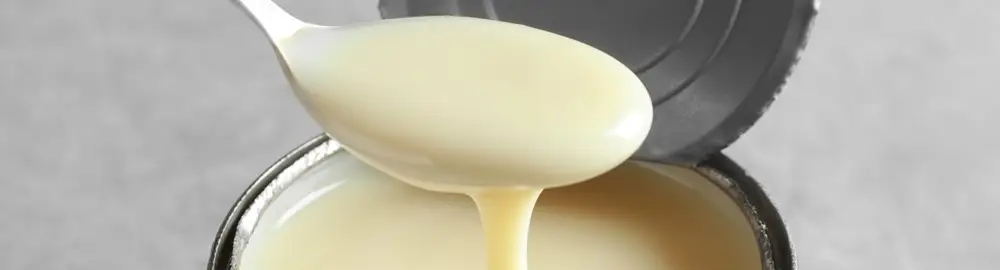

Cara Mudah Buka Kaleng Susu dengan Pisau: Tips Praktis untuk Dapur Anda
Dipublikasikan pada 12 Agustus 2025

Siapa yang tidak suka menikmati krim kental manis yang dituangkan di atas roti tawar? Hidangan ini sering jadi pilihan sarapan atau bekal sekolah anak-anak. Terkadang, para orang tua menambahkan meses atau keju parut di atasnya untuk variasi.
Berbagai bahan tambahan makanan dalam kemasan kaleng, seperti krim kental manis dan susu evaporasi, sudah jadi bagian keseharian kita. Menurut sumber dari National Center for Home Food Preservation, proses pengalengan (canning) sangat penting untuk memperpanjang umur simpan makanan. Proses ini dilakukan dengan menempatkan makanan di dalam wadah kedap udara, lalu memanaskannya untuk merusak mikroorganisme berbahaya dan enzim yang bisa mempercepat pembusukan. Proses ini juga membantu menciptakan kondisi hampa udara, yang juga berperan dalam pengawetan makanan.
Tips Praktis Membuka Kaleng Susu dengan Pisau
Untuk membuka makanan dalam kaleng, kita bisa menggunakan pembuka kaleng atau bahkan pisau. Khusus untuk krim kental manis atau susu evaporasi yang dikemas dalam kaleng, kita bisa membuat celah dengan mudah menggunakan pisau, dibantu dengan benda tumpul seperti batu atau ulekan.
Berikut adalah tips mudah yang sudah umum digunakan untuk membuat celah pada kaleng susu:
- Buat Celah Berbentuk Segitiga: Posisikan pisau di salah satu sisi kaleng. Tusukkan pisau dua kali hingga membentuk sudut lancip segitiga, lalu lipat sisi kaleng yang menjorok ke dalam.
- Buat Celah Kecil di Sisi Seberang: Ini adalah langkah krusial! Buat celah kecil di sisi seberang celah segitiga. Tujuannya agar udara bisa masuk, sehingga krim kental manis atau susu evaporasi dapat dituangkan dengan lancar tanpa tersendat.
- Siap Digunakan: Setelah kedua celah dibuat, krim kental manis atau susu evaporasi sudah siap untuk digunakan.
Mudah, bukan? Ingat, jika Anda melewatkan langkah membuat celah kecil di sisi seberang, aliran susu akan sangat kecil dan sulit dituangkan.
Video singkat tentang cara membuka kaleng susu evaporasi dengan pisau dapat ditonton di bawah ini. Semoga bermanfaat!